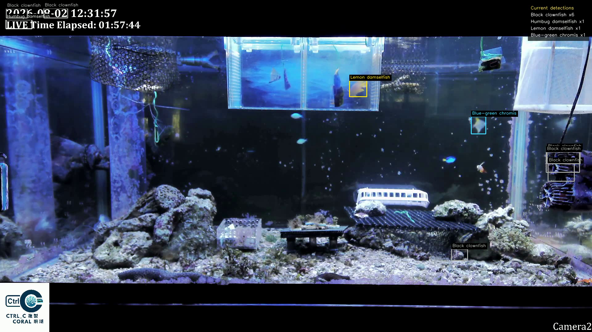
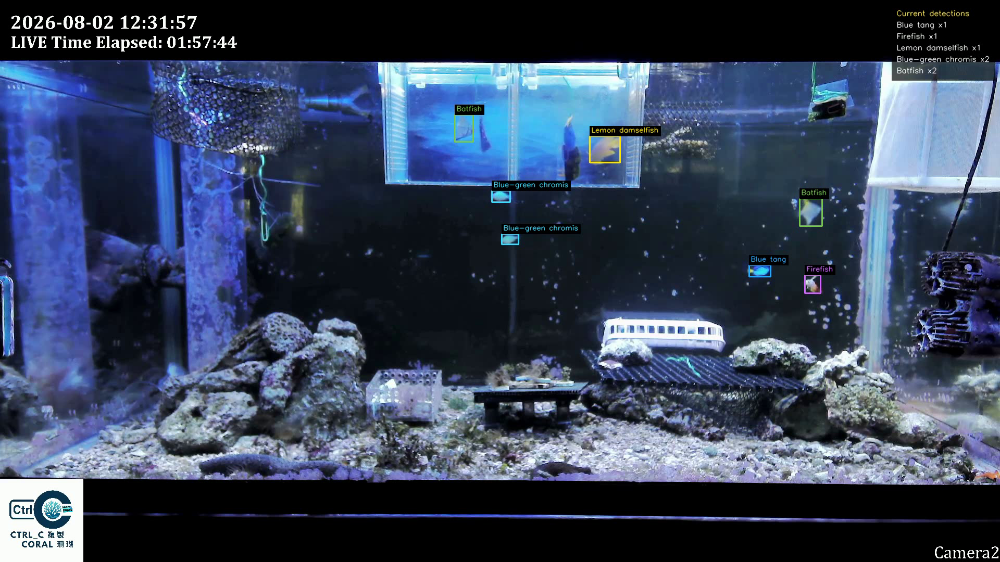
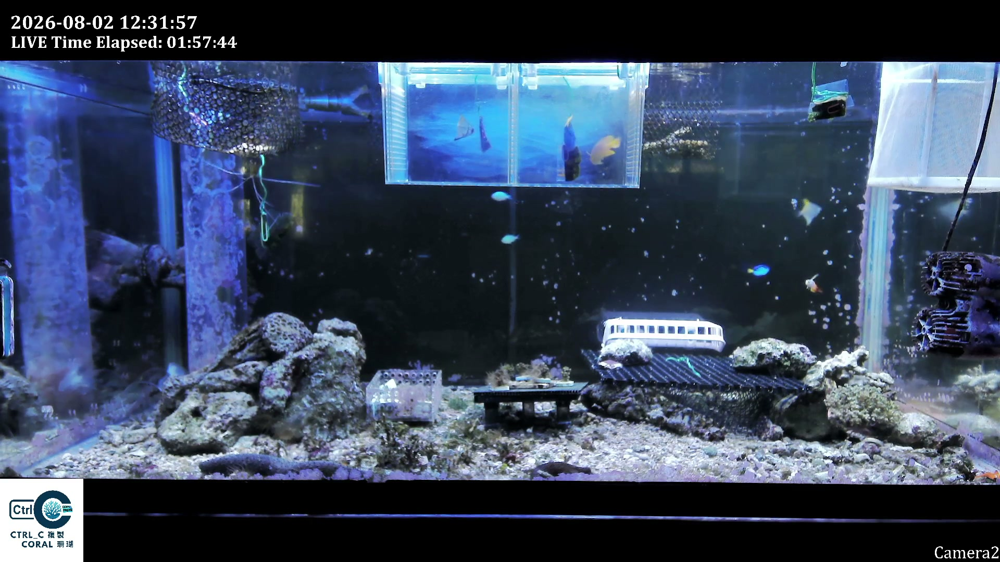
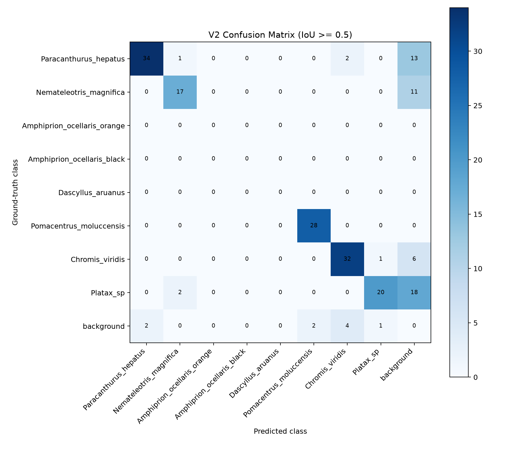
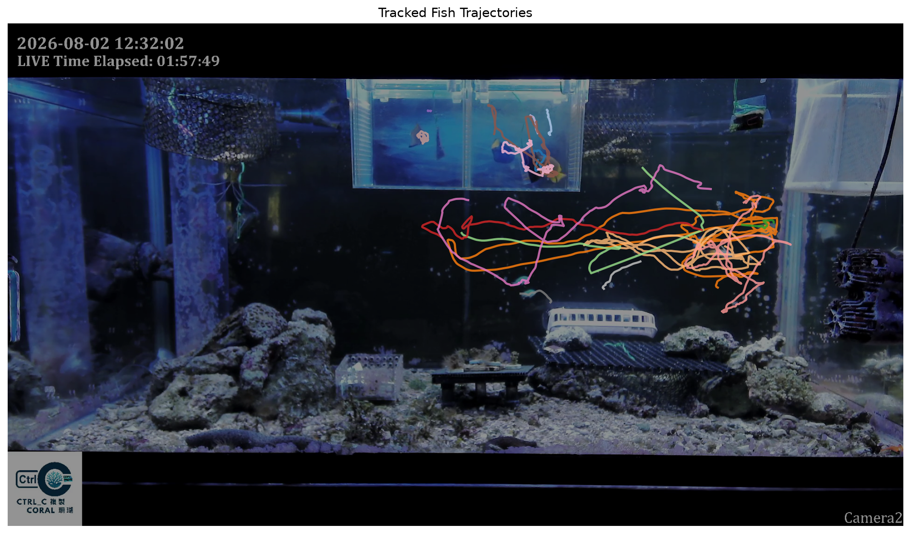
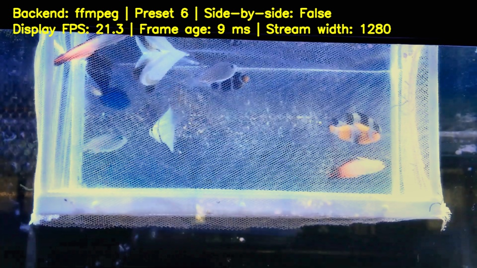

Fish AI / Independent computer vision
Look.
Look again.
The difficult part wasn’t just training a model.
It was understanding what went wrong.


Drag or use the arrow keys. A qualitative comparison, separate from the frozen evaluation below.
01 / Learn the workflow
Annotation
before automation.
Summer 2026 / NYCU Adaptive Photonics Laboratory,
Tainan. Day-to-day guidance mainly from a senior lab member.
Fish images & class mapping
1,292 → 1,104 valid images
10 classes / 80–20 split
Test the real aquarium scene
02 / My school-tank extension
New scene.
New problems.
Pipes, reflections, and equipment became false positives.
The data had to reflect the deployment environment.

How I adapted the model
I added 60 manually labeled full-tank images: 48 for adaptation training and 12 for validation. Fish were labeled; background equipment remained unlabeled as hard-negative context. These were not empty, fish-free images. The independent 8-class aquarium data is separate from the 10-class lab workflow.
03 / Final frozen validation · V2
Measure
what changed.
60 manually annotated frames.
428 ground-truth boxes, frozen before evaluation.
- Precision
- 74.10%
- Recall
- 52.80%
- mAP@50
- 58.20%
F1 61.66% · mAP@50:95 30.34% · TP 226 / FP 79 / FN 202
Missed detections remain an improvement area. This small, scene-specific test does not establish performance on open reefs or every aquarium.
Evaluation protocol and scope
Both models used the same frozen images and labels, image size 960, confidence 0.35, and class-aware one-to-one matching at IoU 0.50. The separate AP calculation used a confidence floor of 0.001 and the project's verified 101-point evaluator. mAP averages cover the six classes with positive ground truth; the two absent classes have no estimated AP, but their detections still count as false positives. These 60 validation frames are separate from the 60 adaptation images used in training and validation.
On this same final test, v1 precision was 9.39%, recall 6.78%, and mAP@50 7.33%. False positives fell from 280 to 79 with v2, a 71.79% reduction. This is a within-test comparison, not a comparison against the older 30-frame results.
04 / Watch the archive
Inside
the tank.
Original demonstration / 71 seconds / Silent
Historical labels & archived evaluation
“AP50” in the archive means mAP@50; the historical numerical result belongs to the earlier 30-frame test. “Batfish” / “Platax_sp” is the original model label for silver moony (Monodactylus argenteus). The original pixels and labels remain unchanged.
The silent video shows the raw scene (0:00–0:15), v1 detections (0:15–0:30), matched v1/v2 views (0:30–0:51), the superseded 30-frame results (0:51–1:03), and next steps (1:03–1:11).

05 / In development
Seeing is
only the beginning.
Exploratory ByteTrack and long-duration live tests.
An engineering project, rather than a publication.


Under the hood